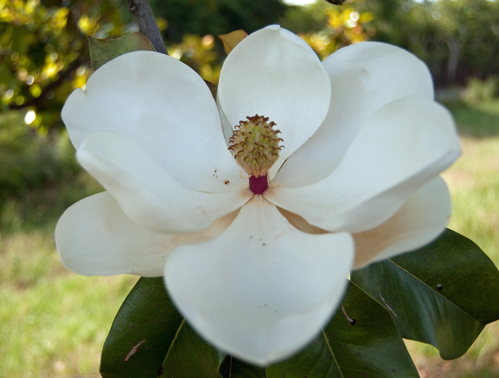
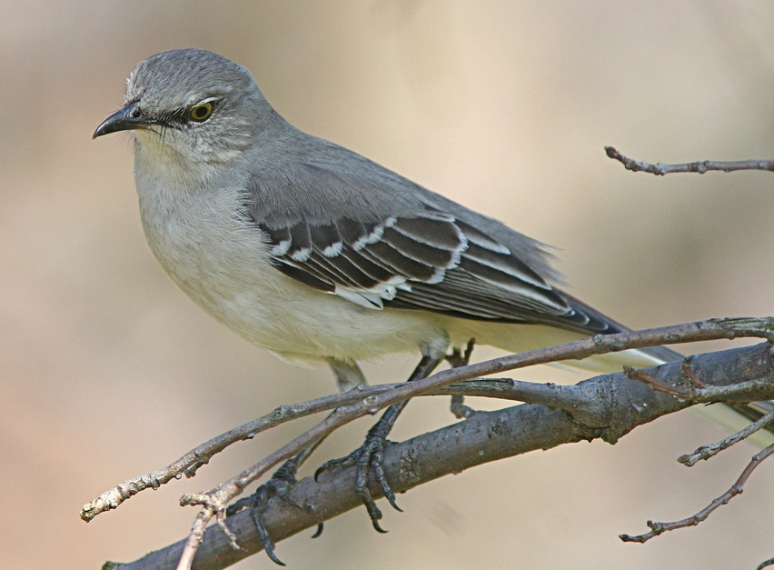
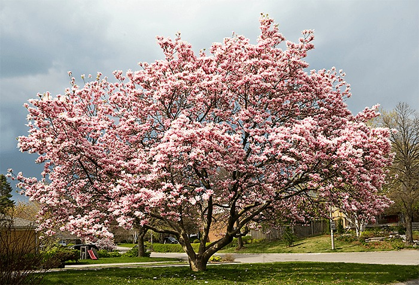

Mississippi joined the Union as the 20th state in 1817 and gets its name from the Mississippi River, which forms its western border. Early inhabitants of the area that became Mississippi included the Choctaw, Natchez and Chickasaw. Spanish explorers arrived in the region in 1540 but it was the French who established the first permanent settlement in present-day Mississippi in 1699. During the first half of the 19th century, Mississippi was the top cotton producer in the United States, and owners of large plantations depended on the labor of black slaves. Mississippi seceded from the Union in 1861 and suffered greatly during the American Civil War. Despite the abolition of slavery, racial discrimination endured in Mississippi, and the state was a battleground of the Civil Rights Movement in the mid-20th century. In the early 21st century, Mississippi ranked among America’s poorest states
| Date of Statehood | Capital | Population | Size |
|---|---|---|---|
| December 10, 1817 | Jackson | 2.96 million | 48,434 square miles |
Virtute et armis (“By valor and arms”)
Magnolia
Mockingbird
Magnolia
Interesting facts